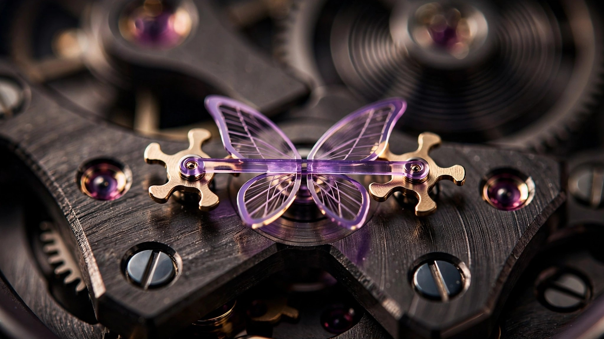

A Train Ticket, a Silicon Blade, and the End of Variable Force
How Girard-Perregaux built the only true constant-force escapement in production, and why it took silicon to make a 200-year-old idea work
Wind a mechanical watch fully and it keeps excellent time. Come back in three days, when the mainspring has surrendered most of its stored energy, and the same watch will have drifted. Not because something broke, but because every Swiss lever escapement ever made suffers from the same fundamental weakness: the impulse it delivers to the balance wheel depends on how much force the mainspring can still provide. Full barrel, strong kick. Depleted barrel, feeble nudge. Amplitude drops, rate wanders, and the chronometer certification that looked so impressive on the spec sheet starts to feel like a snapshot of the watch at its best rather than a guarantee of how it performs across its entire power reserve.
Watchmakers have known about this problem for centuries. Thomas Mudge built a constant-force escapement for his marine chronometers in the 1770s. Breguet patented one in 1798 and fitted it to his Sympathique clocks. Neither design entered widespread use, because the mechanisms were too complex, too fragile, and too expensive to maintain. In more recent history, A. Lange and Söhne revived the fusée-and-chain to equalize barrel torque, and F.P. Journe placed a remontoir d’égalité along the gear train to smooth power delivery. Both improve consistency, but both act upstream of the escapement itself. By the time their regulated force reaches the escape wheel, it has passed through additional pivots, wheels, and friction points that reintroduce the very variation they were designed to eliminate.
Girard-Perregaux took a different path. Instead of filtering force before it reaches the escapement, they built a mechanism where constant force is an inherent property of the escapement itself. At its center sits a silicon blade thinner than a human hair, and it does something that no metallic component could ever do reliably: it buckles.
A Ticket on the Train
In the late 1990s, a watch designer named Nicolas Déhon was commuting to work and fidgeting with his train ticket. He pressed the card between his fingers and watched it bow into a C-shaped arc. Then he pushed against the convex side. At a certain threshold, the card snapped through to the opposite curvature, forming an inverted C. He tried again, pressing slowly. Same snap. He pressed harder. Same snap. Whether the input force was gentle or aggressive, the card always released the same stored energy at the buckling point.
Déhon recognized that this bistable behavior, a structure that occupies one of two stable states and transitions between them with a fixed energy release, could solve the variable-force problem that had dogged mechanical watchmaking for three hundred years. If you could build an escapement around a bistable blade, the impulse delivered to the balance wheel would be identical at every oscillation, regardless of what the mainspring was doing upstream.
He filed a patent at Rolex, where he was employed at the time. A prototype was built. It didn’t work, at least not reliably, because the metallic materials available in the late 1990s couldn’t produce a blade thin enough and elastic enough to buckle consistently over millions of cycles without fatigue, deformation, or drift. Metals work-harden. They develop micro-cracks. Their elastic properties change with temperature. Rolex shelved the project.
Déhon eventually moved to Girard-Perregaux, and he brought the idea with him. By then, the watch industry had begun experimenting with silicon for hairsprings and escapement components, and silicon turned out to be exactly what the bistable blade needed: a material with near-perfect elasticity that does not fatigue, does not corrode, is immune to magnetic fields, and can be fabricated to tolerances measured in microns using semiconductor manufacturing techniques borrowed from the chip industry.
Anatomy of a Buckling Blade
Understanding the Neo Constant Escapement requires abandoning the mental model of a conventional Swiss lever. In a standard movement, a single escape wheel with pointed teeth rocks a lever back and forth, and that lever transmits whatever force the wheel carries directly to the balance wheel via jeweled pallets. More barrel torque means a harder push on the escape wheel, which means a harder kick to the balance. Less torque, less kick. Rate follows amplitude, amplitude follows impulse, impulse follows barrel state.
GP’s caliber introduces a fifth wheel into the gear train, an unusual addition. From that fifth wheel, power flows to two escape wheels, each carrying three lobed teeth, positioned on opposite sides. Both rotate in the same direction, driven directly by the fifth wheel, but they engage the balance alternately rather than simultaneously. Between them, spanning a butterfly-shaped silicon frame, sits the blade: 14 microns wide, 120 microns thick, roughly six times thinner than a strand of human hair.
A pivot lever at the blade’s center engages the balance roller. As the balance swings, the lever twists the blade into an S-shaped deformation. One of the escape wheels, meanwhile, slowly compresses the opposite side of the blade through an arming rocker with two curved arms. It does not matter whether the mainspring is delivering strong force or weak force to that escape wheel. What matters is that the blade is being pushed toward its buckling threshold.
At the critical point, the blade snaps. It transitions from one S-curve to the opposite S-curve in a single abrupt motion, releasing a fixed quantum of elastic energy that the pivot lever transmits to the balance wheel. Always the same energy. Always the same impulse. Whether the barrel was wound thirty seconds ago or six days ago, the balance receives an identical kick 21,600 times per hour.
As the balance swings back, it releases the escape lever via a small pallet. One escape wheel advances a third of a turn, the arming rocker slides across to block the opposite wheel, and in the process, the blade is re-twisted into its loaded S-shape for the next oscillation. Charge, buckle, impulse, recharge. Twenty times per second, for seven days straight.
Born in a Cleanroom
No conventional workshop produces the silicon blade. It is fabricated at Sigatec, the largest manufacturer of silicon watch components, located in Sion, Switzerland. Sigatec was co-founded in 2006 by Ulysse Nardin, whose Freak movement had pioneered silicon in watchmaking five years earlier, and the facility operates under the same cleanroom protocols used in semiconductor fabrication.
Production begins with a large silicon crystal sawn into wafer-thin slices. Each wafer is bonded to a silicon substrate through an oxide layer, which later serves as a depth reference during etching. A liquid polymer is spun onto the surface at high speed. Centrifugal force spreads it into a smooth, uniform photoresist layer measured in microns.
Photolithography defines the blade geometry. A chrome-on-glass mask, shaped to match the escapement spring’s butterfly profile, is positioned over the wafer like a stencil. Ultraviolet light triggers a chemical reaction in the exposed photoresist, and a developing solution dissolves the reacted areas, revealing the component outlines on the silicon surface below.
Deep Reactive Ion Etching, or DRIE, does the actual cutting. Ions bombard the exposed silicon in alternating etch-and-passivation cycles, removing material layer by layer in a process that is essentially the inverse of 3D printing. Etching continues downward until the oxide reference layer halts it, ensuring consistent depth across every blade on the wafer.
After etching, the substrate and oxide layer are stripped away. A thermal treatment then grows a new oxide skin on the silicon components, increasing mechanical strength and producing the characteristic blue-to-violet color visible through the dial. Each finished blade is detached from the wafer by hand, starting from the central spring plate, a step that cannot be automated because the 14-micron-wide structure is too fragile for mechanical separation.
Yield tells the economic story. A single wafer can hold 500 conventional hairsprings. For the Constant Escapement blade, that number drops to 30. Roughly seventeen times fewer components per wafer, with a fabrication process that demands cleanroom conditions, photolithographic precision, and manual handling at the final step. Every one of those factors shows up in the retail price.
What Changed in the Neo
GP unveiled the first concept watch in 2008 and shipped the Constant Escapement L.M. in 2013. It was a large watch, 48 millimeters in white gold, with an off-center dial and a butterfly-shaped silicon blade occupying the lower half of the face. Critics praised the engineering and the Grand Prix d’Horlogerie de Genève awarded it the Aiguille d’Or, the highest honor in the competition’s history. But 48 millimeters was already oversized by 2013 standards, and the first-generation mechanism, while functional, had limitations in efficiency and self-starting behavior.
In 2023, after a decade of refinement, GP released the Neo Constant Escapement. Case diameter dropped to 45 millimeters with a tapered profile that narrows to 42.5 millimeters at its thinnest point, making it wearable by modern standards, if still assertive. Hands moved to center. Component count fell by sixteen, from 282 to 266, reducing friction and improving efficiency throughout the gear train. And the escapement geometry itself was reworked in ways that matter more than the case reduction.
In the original, the large three-lobed escape wheels handled both arming and impulse duties. In the Neo, a pair of smaller escape wheels mounted co-axially with the larger ones now manages the arming rocker directly. Larger wheels no longer perform escapement work. Instead, they serve as rotational mass that tempers the sudden acceleration of the smaller wheels at each release, absorbing shocks and stabilizing the rocker’s motion. Separating the arming function from the inertial damping function allowed GP to bring the bistable blade to its buckling threshold more readily and with less energy loss, improving both self-starting reliability and overall efficiency.
Fifteen patents protect the caliber’s innovations across both generations. COSC certification, absent from the original, now accompanies the Neo, providing independent verification that the constant-force principle delivers on its promise of rate stability across the full seven-day, 168-hour power reserve.
Three Cases, One Movement
GP offers the Neo Constant Escapement in three case materials. Grade 5 titanium is the standard, at 45 millimeters and 14.8 millimeters thick, with brushed surfaces, a polished bezel, and a rubber strap carrying a titanium triple-folding buckle with micro-adjustment. Retail is $99,600. An 18-karat rose gold version joined the collection in 2026, featuring solid pink gold Neo bridges that frame the purple silicon blade against a dark peripheral ring, at CHF 128,000.
A third variant, limited to two numbered pieces, uses a composite of carbon, silicon carbide, and silicon for the case. Extremely hard and roughly half the weight of titanium, this material is rarely seen in watchmaking because it resists conventional machining. At 45.35 millimeters, the case is slightly larger than the titanium version. Its silicon blade shimmers green rather than purple, a serendipitous result of the oxide layer’s interaction with the carbon-silicon substrate during thermal treatment. Price is available on request, which in haute horlogerie means you cannot afford it.
Production across all variants remains constrained. Only five or six watchmakers at GP are qualified to assemble the caliber, and each one builds the movement from start to finish. Annual output sits between 50 and 60 watches. Even if demand justified higher volume, the 30-blades-per-wafer yield at Sigatec would limit how fast GP could scale.
Why It Matters Beyond the Wrist
Constant force in watchmaking is not merely an accuracy specification. It represents a shift in how the escapement relates to the rest of the movement. In every other mechanical watch, the escapement is a passive recipient of whatever force arrives from the barrel. In the Neo Constant Escapement, the bistable blade creates a hard boundary between the power source and the oscillator, a firewall that guarantees identical impulses regardless of upstream conditions. Rate stability ceases to be something you hope for and becomes something the mechanism enforces.
GP is not the only house exploring constant force. Breguet’s magnetic escapement, which we covered previously, uses magnetic potential energy stored in permanent magnets rather than elastic energy in a silicon blade. F.P. Journe’s remontoir remains the most commercially successful near-constant-force solution, though it operates upstream of the escapement rather than within it. What sets GP apart is that their approach embeds constant force into the escapement’s own geometry, making it an intrinsic property of the mechanism rather than an add-on that compensates for a conventional escapement’s weaknesses.
Nicolas Déhon flexed a train ticket in the 1990s. Twenty-five years later, his insight lives in a blade six times thinner than a human hair, fabricated in a cleanroom using techniques borrowed from the semiconductor industry, oscillating inside a movement protected by fifteen patents. Five watchmakers in the world can build it. Fifty watches a year leave the workshop. Each one carries the same fundamental promise: wind me fully or find me nearly spent, and I will kick the balance wheel with exactly the same force.
For three hundred years, that promise was impossible to keep. Silicon made it real.
Sources
- Swiss Watches Magazine, “Girard-Perregaux Neo Constant Escapement Silicon Escapement,” March 2026. swisswatches-magazine.com
- Hodinkee, “In-Depth: Understanding The Newly-Revised Girard-Perregaux Neo Constant Escapement,” 2023. hodinkee.com
- Revolution Watch, “The Revolutionary List: 24 Technically Brilliant Watches – Girard-Perregaux Constant Escapement L.M.,” 2025. revolutionwatch.com
- Monochrome Watches, “First Look: The Spectacular Pink Gold Girard-Perregaux Neo Constant Escapement,” December 2025. monochrome-watches.com
- SJX Watches, “In-Depth: Breguet’s Constant-Force Magnetic Escapement,” 2022. watchesbysjx.com